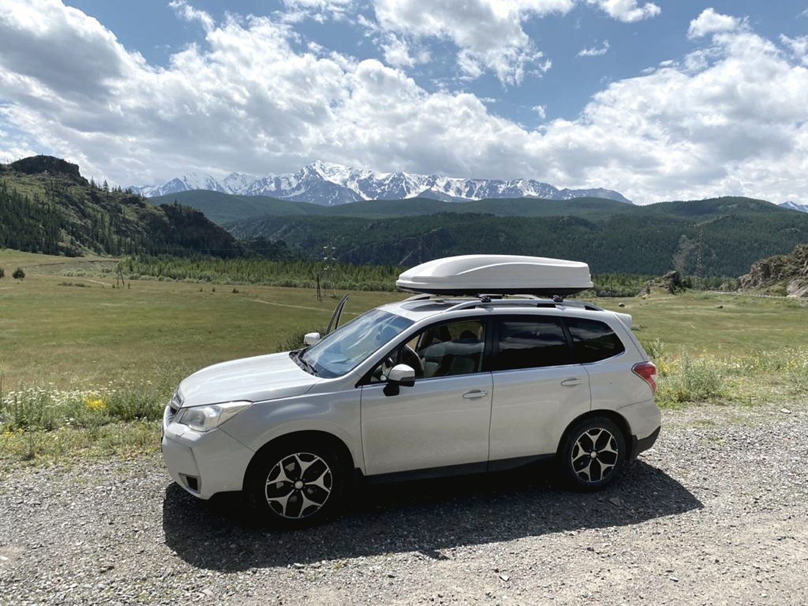
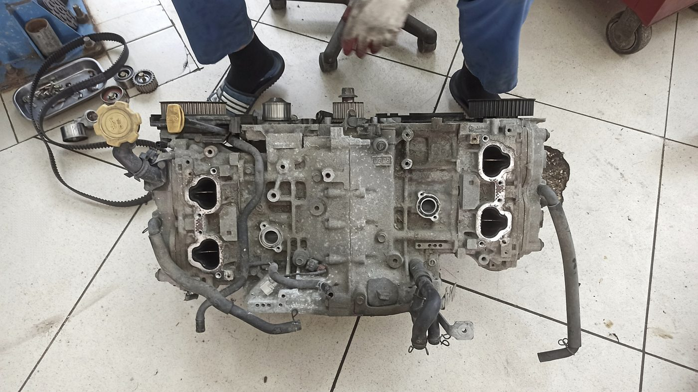
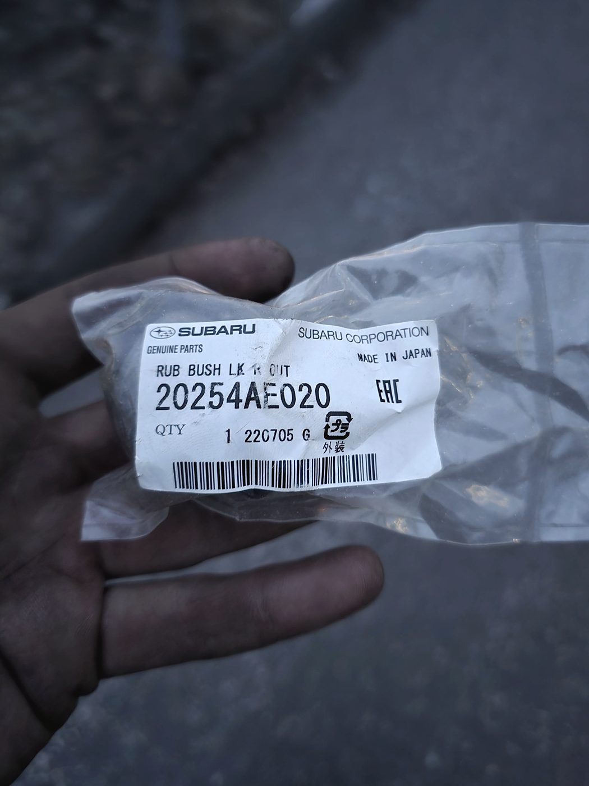
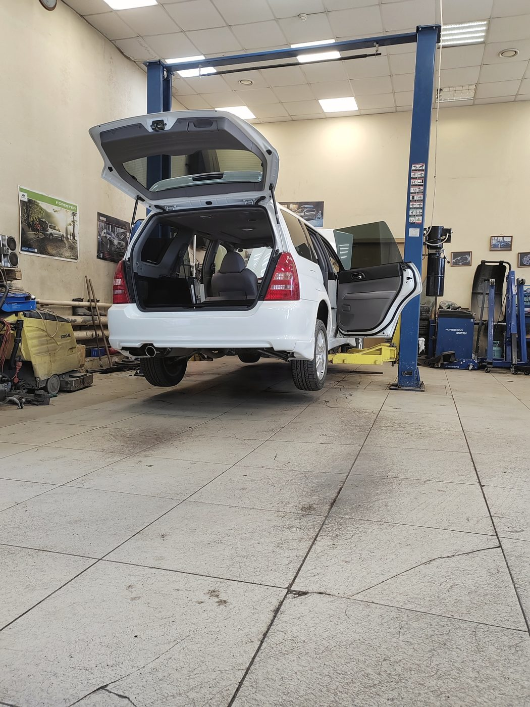
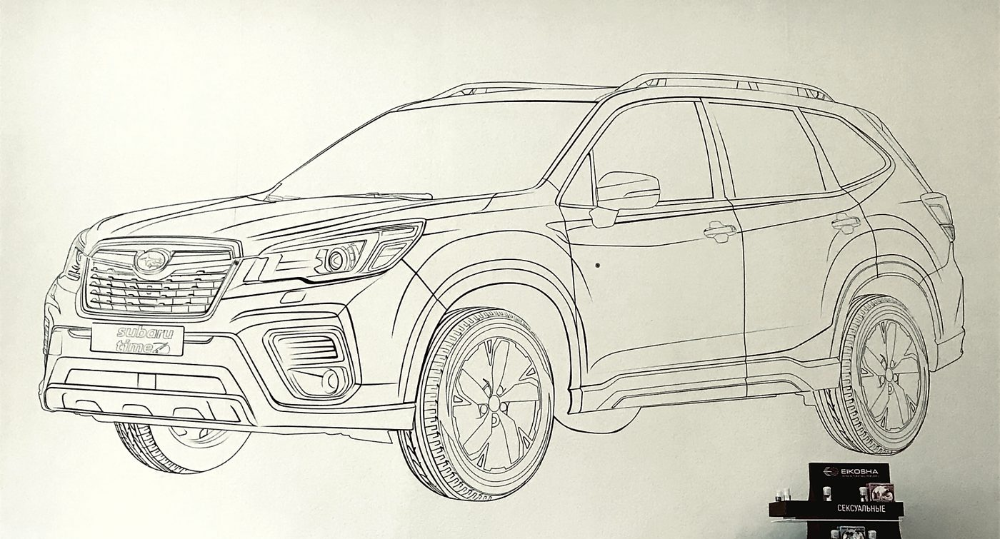

Позвоните, когда подъедете
Мы на первом этаже дома 40/1 по Писарева. Наберите +7 913 002-05-19 с парковки — вас встретят и покажут заезд. Это быстрее, чем ещё один круг по кварталу.
Автоцентр по Subaru · улица Писарева, 40/1 · Центральный район
Мы занимаемся Subaru — и только ими. Поэтому запчасть чаще всего лежит у нас на полке, а не едет неделю: на месте и оригинал, и контрактные детали по оптовым ценам. Диагностика, ремонт двигателя и вариатора, ходовая, печка, кондиционер — ежедневно с 9 до 20, включая субботу и воскресенье.

Как это устроено
Слева цех, справа склад. Мастер называет деталь — она берётся здесь же, а не заказывается у поставщика с неделей ожидания. Из-за этого и сроки короче, и цена ниже: вы не платите наценку магазина поверх наценки сервиса.
Диагностика по симптому, а не «покажите чек». Разбираемся, показываем, объясняем и предлагаем варианты — включая тот, который дешевле.
Запчасти под Subaru — по всем узлам, от расходников до кузова и оптики. Есть контрактные детали: состояние и цену называем честно, до покупки.
Что делаем
Течи, прокладки, охлаждение, перегрев. Оппозит снимается и разбирается на месте — у нас для этого есть и площадка, и опыт.
Диагностика TR580 и других коробок по симптомам: рывки, пинки, ошибка на панели. Сначала объясняем причину, потом считаем деньги.
Стук накатом, сальники редуктора, рейка, стойки. Проверяем машину целиком — часто дело оказывается не там, где искали.
Отопитель, климат, заправка кондиционера. Беремся и за леворульные машины, в том числе за то, от чего отказываются другие.
Замена масла, фильтров, свечей, ремней. Расходники берём со своего склада, поэтому ТО делается за один визит.
Помогаем подобрать машину под бюджет и разобраться с продавцом. Смотрим предложение до сделки, а не после.


Честно
«Не смогли найти, где вы… Ни вывесок, ничего, кружили-кружили,
так и не попали… Не хочу портить рейтинг из-за этого. Просто сделайте, чтобы вас
было хоть немного видно с дороги, если сможете»
— Руслан Королёв, отзыв в 2ГИС, 27 июня 2026
Спорить тут не с чем: это правда, и оценку он нам не снизил только по доброте. Пока с фасадом ничего не решено, работает вот что.
Мы на первом этаже дома 40/1 по Писарева. Наберите +7 913 002-05-19 с парковки — вас встретят и покажут заезд. Это быстрее, чем ещё один круг по кварталу.
Не ищите по вывеске, стройте маршрут по адресу: карта ведёт точно. Кнопка «Маршрут в 2ГИС» есть внизу страницы и в контактах.
Отзывы · 4,9 из 5 по 141 оценке в 2ГИС
«Никакой воды и попыток навязать лишние услуги — всё объяснили по сути»
Отзыв в 2ГИС · диагностика ходовой и двигателя Subaru Forester · 23 июня 2026
Нужно было починить дворники на леворукой машине — на других СТО либо отказывались браться за работу, либо называли откровенно завышенные цены, — а ещё отремонтировать печку и кондиционер. Мастера справились со всеми задачами быстро и качественно. Цена оказалась адекватной, без каких-либо скрытых доплат.
Анастасия А. · 12 июня 2026
Оперативно подобрали необходимые запчасти, быстро доставили и установили. В процессе ремонта держали в курсе о ходе работ; предлагались варианты контрактных запчастей с озвучиванием их состояния и цены; давали советы и объясняли все нюансы.
Шульц Вернер · 10 апреля 2026
Столкнулся с непонятным стуком при езде накатом на SG5. Выяснилось при осмотре — банально ослабшие гайки на колесе. Но при полном осмотре давануло сальники на редукторе и пролетевшая рейка. Ребята всё исправили оперативно и качественно.
Отзыв в 2ГИС · 20 января 2026
Менял задние стойки. Всё по делу. Заменили только нужные детали, не навязывали покупку доп. запчастей. Сделали всё максимально аккуратно и быстро. Огромный плюс — работа в выходные дни.
Александр · 5 июля 2026


Контакты